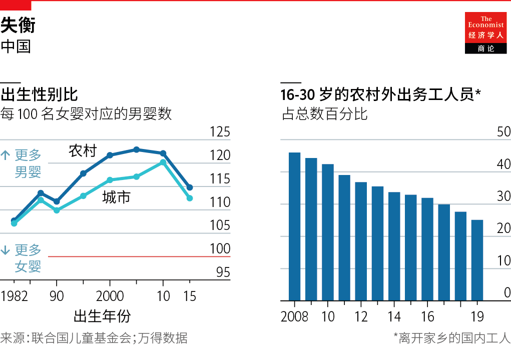
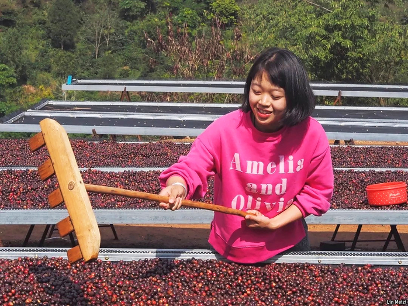
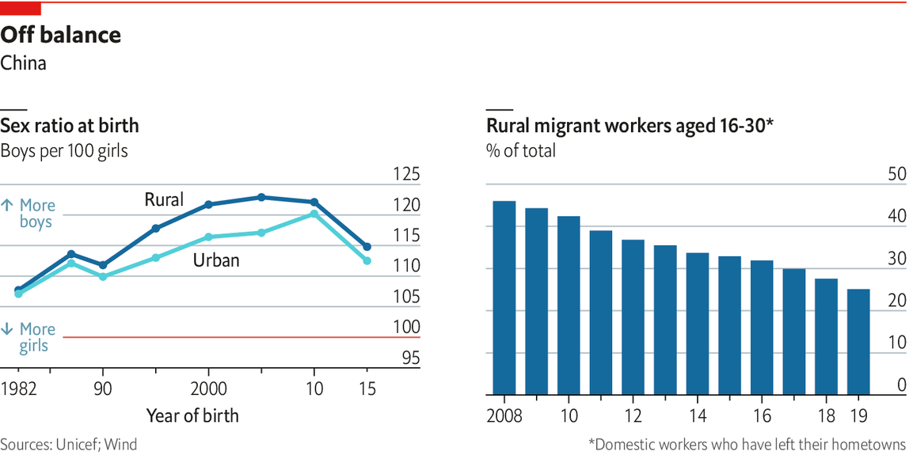

2021-01-31T13:52:20+00:00
城乡鸿沟
返乡
城乡青年之间的差距在缩小，但依然很大【专题报道《中国青年》系列】

林美姿（音译）是农民的女儿。她报考的大学没有一个位于她所在的云南省这个中国最贫困的地区之一。年轻人往往像其他数以百万计的农民工一样逃离农村，寻求在发展迅速的沿海城市找工作。很少有人回头。林女士运气不错，考到了1400公里外的一个大城市，一毕业就找到了工作。但是，她放弃了这个工作机会，回到家乡经营家里的咖啡农场。
现年27岁的林女士在普洱市附近的山区工作，这里遍布木瓜树和鸡，是中国小规模自产咖啡产业的心脏地带。一直到近期，农村的年轻人很少放弃城市生活。中国农村中的壮劳力已经枯竭，只剩下体弱者、小孩和照顾他们的老人，而孩子的父母在远方做厨师和清洁工，或者在东部的工厂城工作。如今，一批在外务工人员开始回流，人数虽少却在增长。他们被称为“返乡青年”。
他们返回的原因之一是乡土中国更有吸引力。生活水平已经提高。新建的道路和高速铁路使人们可以轻松地从本身已经转变的县城前往大城市。由于可支配收入的增加，更漂亮的公寓楼、酒店和商店如雨后春笋般涌现。劳动力短缺让工人有了更强的议价能力，农村名义工资正在迅速上涨，这有助于消除城乡收入之间的鸿沟。
最重要的是，互联网为偏僻的落后地区带来了大城市的生活。农村的年轻人和城市的年轻人一样在手机上购物，在相同的社交媒体和视频应用里每天花上好几个小时。只需轻轻点几下，他们几乎可以让任何东西送货上门，这要归功于受蓬勃发展的物流业支撑的中国电子商务。返乡的年轻人往往会去干销售，卖从高档茶叶到豆腐等各种东西。自2019年年中以来，已有超过10万名农村用户在大型网上商城阿里巴巴上直播带货。
互联网也把乡村生活带入了城市，发展出一种都市对乡土中国的新的浪漫情怀。这种感觉可以用“乡愁”一词来概括——这是中国版的“田园美学”。随着年轻游客越来越多地躲开热门景点，选择到乡村僻静地度假，农村青年看到了城市对他们的生活方式的热情。29岁的云南陶工董建发离开省会昆明返回家乡，重操古老的陶瓷行当。
草更绿的地方
林美姿（如图）一度对咖啡毫无兴趣。1980年代，在由世界银行资助的脱贫举措下，她的家人是第一批在现代中国种植咖啡树的人。咖啡豆是维持生计的一种方式。但她在城市里接受的咖啡师培训告诉她，咖啡是城市生活的标志。她说：“我在城里的老朋友都羡慕我在山里的工作。” 来自农村的直播非常受欢迎，这是城市乡愁潮流的一部分。它已经造就了一些名人，其中最有名的是李子柒，她发布了自己在四川采野菜、摘黄瓜和烹饪丰盛菜肴的视频。直播者把中国中产阶级的这种精神需求变了现——李子柒的个人食品品牌赚了几百上千万。
工作态度也在变化。农村青年不再准备像父母那样在生产线上一干就是几个小时，而是选择做快递员或网约车司机等零活，这让他们可以离家更近且工作时间灵活。“北上广深”（即北京、上海、广州和深圳等富裕城市）的魅力正在逐渐消退。牛津大学研究乡村怀旧情结的钱琳达（音译）说：“起初，每个人都认为要想成功，就必须去那里。”回到乡镇老家意味着失败。
现在，农村和城市的年轻人都在谈论“城市病”：蜗居的天价租金、空气不好、工作时间长。所有人都喜欢更好的工作环境。为了说服更多的流动人口留下来，一些工厂甚至设立了日托中心并为单身人士举办婚介活动。根据官方统计，在到2019年为止的十年里，30岁以下远离家乡的农村流动人口的比例几乎减少了一半（尽管这不包括从村庄迁移到繁荣的当地县城的人口）。
年轻人可能会更挑剔的部分原因是父母如今能够更好地支持他们。很少有人需要与兄弟姐妹争夺在几十年的经济繁荣中积累的家庭财富。董先生17岁从职校毕业，在家里待了两年才去昆明做第一份全职工作。换做前些年的话，他的家人会在他完成义务教育后（在中国是15岁）就让他出去挣钱。
国家支持很有用。乡村振兴是习近平重视的项目，他呼吁年轻教师回乡。共青团正在帮助10万名在外青年于2022年前返乡就业。网民嘲笑这是对毛时代残酷的城市青年“下乡”运动的复兴。这种比较很能说明问题。当党赞美农村生活时，它想为数千万不满的在外青年创造一个出口。他们从大城市撤退表明不平等现象日益加剧，也显示了要向社会上层流动有多么难。
在中国，户籍制度把城乡差距写进了法律。大约60%的人口是城市居民，但只有44%的人口有城市户口。农村户口的人相当于被禁止完全在城市中安顿下来，而且上学难。因此，农村和城市青年有着不同的受教育道路。2015年，所有15至17岁的年轻人中有超过80%在上学，比五年前的比例要高。但斯坦福大学的斯科特·罗泽尔（Scott Rozelle）和娜塔莉·海尔（Natalie Hell）在《看不见的中国》（Invisible China）一书中指出，在农村地区，许多人上的是劣质的职业学校。尽管在一所职业学校学习建筑学，但董先生并没有寻找高薪工作，因为他觉得自己不够格。
年轻人最近意识到了城乡差距。林女士的父亲卖1公斤咖啡豆挣的钱还不如城里的一杯咖啡，这让她感到震惊。她说：“我认为这完全不公平。” 2020年，她帮助建立了云南精品咖啡社区，这是一个贸易协会，寻求让年轻农民获得更大的影响力。在城镇里四处递送包裹和外卖的工薪阶级青年更容易被城市孩子看到。当他们罢工要求付清被拖欠的工资时，同情他们的城市同龄人会在网上声援他们。
去年引起全国关注的一个差距是月经贫困。一张图片在社交媒体上流传，网上有出售100片卫生巾的价格不到3美元。向农村青少年提供安全卫生巾的两项众筹活动筹集了30多万美元。在一所农村学校将这些卫生巾放在女厕所外面的盒子里后，富裕地区的学生也开始这样做。在此过程中，许多人了解到，性教育匮乏和对月经的污名化也并不完全是农村问题。
另一个是家庭暴力。去年秋天，年轻的藏族网红拉姆在直播时被丈夫袭击，后因烧伤而死亡。粉丝们观看她的视频，是因为它们展现了物质稀缺的生活中平淡却阳光的一面。几十万人到微博支持“拉姆法案”，以向家庭暴力的受害者提供更好的法律保护。家暴是又一个不分城乡、但对农村女性伤害更深的祸害。
其他不平等现象则未引起注意。来自农村家庭的毕业生失业的可能性是城市人口的两倍。政府在公务员和军队中为毕业生预留了位置。但是没有学位的农村青年境遇最差。当村子被封锁时，他们首当其冲遭受了疫情的冲击，许多人蜂拥进入的非正规经济并不提供工作保障或福利。城市居民对人际关系的依赖远远超过农村人。董先生感觉自己是被迫接受了一份在昆明递送白酒的工作，每天要干14个小时。他满怀希望地进城，却心怀愤恨地离去。
最大的鸿沟源自重男轻女，这让许多女婴在独生子女政策下被流产，从而扭曲了性别比例。这个比例在农村地区最为失衡：在1990年代出生的人中，每100个女孩就有117个男孩——这是中国有史以来最高的婚龄人口性别比。罗泽尔（Rozelle）估计，多达4000万年轻男性没有机会找到伴侣。他们被称为家族树上的“光棍”。失业的未婚青年有一天可能成为破坏稳定的社会力量。
目前而言，民意调查发现中国的劳工阶级并没有因此而感到不满。香港中文大学的曾玉霞说，光棍们在妓院里找出口，他们经常把四分之三的工资花在性服务上（曾女士在广东做酒吧招待临时工，采访了其中的100位）。其他研究表明，有大量富余男性人口的人群的暴力、犯罪和强奸率会高于正常水平。不过，罗泽尔认为，严厉的惩罚可能会阻止许多人走上这条路。
共产党也提供了一种强效的分散注意力的方法：增强民族团结感，鼓励人们逆来顺受，就像他们在封锁时那样。正如本报道将解释的那样，党希望通过迎合这种爱国主义来笼络躁动不安的青年。
2021-01-31T13:52:20+00:00
The rural-urban divide
Homecoming
Rural and urban youth are closing the gap. But it remains large
NONE OF THE universities to which Lin Meizi, a farmer’s daughter, applied was in her province of Yunnan, one of China’s poorest regions. Young people often flee to join millions of other rural migrants seeking work in booming coastal cities. Few look back. Ms Lin got her break when she was accepted to study in a big Chinese city 1,400km away, then clinched a job straight out of university. But she turned down the offer—to return home to run her family’s coffee farm.
Ms Lin, now 27, works in the mountains near Pu’er, the heartland of China’s small home-grown coffee industry, among papaya trees and chickens. Until recently it was rare for a rural youngster to forgo an urban life. China’s countryside has been drained of able-bodied villagers, leaving only the infirm, the very young and the elderly who care for them while their parents toil far away as cooks and cleaners, or in the factory towns of the east. Now a small but growing counterflow of migrants has begun to go home. They are known as
One reason for their return is that provincial China is more inviting. Quality of life has improved. New roads and high-speed railways make for easy travel to big cities from county seats that have themselves been transformed. Nicer apartment blocks, hotels and shops have sprung up, fuelled by growing disposable incomes. Nominal rural wages are rising rapidly, as labour shortages give workers more bargaining power, helping to close the chasm between rural and urban incomes.
More than anything, the internet has brought big-city life to provincial backwaters. The rural young shop on their phones like the urban young, spending hours on the same social media and video apps. With a few taps, they can get almost anything delivered thanks to the sprawling logistics industry underpinning Chinese e-commerce. Returning youth often find jobs selling stuff from premium tea to tofu. Since mid-2019, over 100,000 livestreamers have tuned in from farms to shift goods on Alibaba, a giant e-shop.
The internet has also brought country living to the town, fostering a new urban romance with rural China. The feeling is encapsulated in
Where the grass is greener
Coffee once held no interest for Ms Lin (pictured). Her family was the first to plant coffee trees in modern China, under a poverty-relief initiative financed by the World Bank in the 1980s. The beans were a way of making ends meet. But her time in the city, where she trained as a barista, showed her that coffee was a mark of urbanity. “My old city friends all envy my job in the mountains,” she says. Live-streaming from the countryside, part of the urban
Attitudes to work are changing, too. Rural youths are no longer prepared to spend hours toiling on production lines as their parents did. Instead they pick up gigs as couriers or ride-hailing drivers, allowing them to stay closer to home and choose their working hours. The allure of “BeiShangGuangShen”, as the rich cities of Beijing, Shanghai, Guangzhou and Shenzhen are known, is fading. “Initially everyone thought that if you wanted to make it, you had to go there,” says Linda Qian of Oxford University, who studies rural nostalgia. Returning to one’s township meant failure.
Now rural and urban youth speak of
Young people can be fussier partly because parents are better able to support them. Few compete with siblings for household savings, built up over decades of economic boom. After attending vocational school until 17, Mr Dong lived at home for two years before he went to Kunming for his first full-time job. Not long ago his family would have sent him out to earn an extra wage after compulsory schooling, which ends at 15 in China.
State support helps. Rural revitalisation is a pet project of Xi Jinping, who has urged young teachers to go to backwaters. The Communist Youth League is helping 100,000 migrant youths return home to work by 2022. Netizens mock this as a revival of the brutal “sending-down” of urban youth to the countryside under Mao. The parallel is instructive. When the party praises rural life, it wants to create an outlet for millions of young dissatisfied migrants. Their retreat from big cities is an indictment of rampant inequality, and a sign of how hard it is to be upwardly mobile.
In China the urban-rural gap is codified through the
Young people are newly aware of rural-urban divides. Ms Lin was struck that her father earned less for 1kg of beans than the cost of a single cup of coffee in the city. “I thought, that’s just not fair,” she says. In 2020 she helped set up the Yunnan Speciality Coffee Community, a trade association to give young farmers more clout. Ferrying packages and food around town, working-class youths are more visible to city kids. When they strike to demand unpaid wages, sympathetic urban peers support them online.
One gap that gained nationwide attention last year was period poverty. An image was circulated on social media of 100 sanitary towels being sold online for under $3. Two crowdfunding campaigns to send safe pads to rural teens raised over $300,000. After a rural school placed these pads in a box outside the girls’ toilets, students in better-off places began to do the same. In the process, many learnt that poor sex education and the stigma around menstruation are not inherently rural issues.
Another is domestic abuse. Last autumn Lhamo, a young Tibetan live-streamer, died from burns after being attacked by her husband during a broadcast. Fans tuned in to her videos because they showed the unglamorous yet sunny sides of a life of scarcity. Hundreds of thousands took to Weibo to back a “Lhamo Act” to give victims of domestic violence better legal protection. It was another example of a scourge that crosses the urban-rural divide, but disproportionately hurts rural women.
Other inequalities go unnoticed. Graduates from rural families are twice as likely to be unemployed as city dwellers. The government reserves slots for graduates in the civil service and the army. But rural youths without a degree fare worst. They bore the brunt of covid-19 when villages were sealed off. The informal economy to which so many flock gives no job security or benefits. Urbanites rely on personal connections far more than their rural counterparts do. Mr Dong felt forced to settle for a job in Kunming delivering bottles of
The deepest divide has arisen because a preference for sons means that many baby girls were aborted under the one-child policy, skewing sex ratios. They are most unequal in the countryside: among those born in the 1990s, there are 117 boys for every 100 girls—the largest this gap has been for Chinese of marriageable age. As many as 40m young men have no chance of finding a mate, reckons Mr Rozelle. They are known as
For now, polls find that China’s working class is not disaffected. Eileen Yuk-ha Tsang of the Chinese University of Hong Kong says that
The Communist Party also offers a potent distraction: a heightened sense of national solidarity, encouraging people to grin and bear things, as they did under lockdown. As this report will explain, the party is hoping to co-opt restless youth by pandering to such patriotism.■
2021-01-31T13:52:20+00:00
城鄉鴻溝
返鄉
城鄉青年之間的差距在縮小，但依然很大【專題報道《中國青年》系列】
林美姿（音譯）是農民的女兒。她報考的大學沒有一個位於她所在的雲南省這個中國最貧困的地區之一。年輕人往往像其他數以百萬計的農民工一樣逃離農村，尋求在發展迅速的沿海城市找工作。很少有人回頭。林女士運氣不錯，考到了1400公里外的一個大城市，一畢業就找到了工作。但是，她放棄了這個工作機會，回到家鄉經營家裡的咖啡農場。
現年27歲的林女士在普洱市附近的山區工作，這裡遍布木瓜樹和雞，是中國小規模自產咖啡產業的心臟地帶。一直到近期，農村的年輕人很少放棄城市生活。中國農村中的壯勞力已經枯竭，只剩下體弱者、小孩和照顧他們的老人，而孩子的父母在遠方做廚師和清潔工，或者在東部的工廠城工作。如今，一批在外務工人員開始迴流，人數雖少卻在增長。他們被稱為“返鄉青年”。
他們返回的原因之一是鄉土中國更有吸引力。生活水平已經提高。新建的道路和高速鐵路使人們可以輕鬆地從本身已經轉變的縣城前往大城市。由於可支配收入的增加，更漂亮的公寓樓、酒店和商店如雨後春筍般湧現。勞動力短缺讓工人有了更強的議價能力，農村名義工資正在迅速上漲，這有助於消除城鄉收入之間的鴻溝。
最重要的是，互聯網為偏僻的落後地區帶來了大城市的生活。農村的年輕人和城市的年輕人一樣在手機上購物，在相同的社交媒體和視頻應用里每天花上好幾個小時。只需輕輕點幾下，他們幾乎可以讓任何東西送貨上門，這要歸功於受蓬勃發展的物流業支撐的中國電子商務。返鄉的年輕人往往會去干銷售，賣從高檔茶葉到豆腐等各種東西。自2019年年中以來，已有超過10萬名農村用戶在大型網上商城阿里巴巴上直播帶貨。
互聯網也把鄉村生活帶入了城市，發展出一種都市對鄉土中國的新的浪漫情懷。這種感覺可以用“鄉愁”一詞來概括——這是中國版的“田園美學”。隨着年輕遊客越來越多地躲開熱門景點，選擇到鄉村僻靜地度假，農村青年看到了城市對他們的生活方式的熱情。29歲的雲南陶工董建發離開省會昆明返回家鄉，重操古老的陶瓷行當。
草更綠的地方
林美姿（如圖）一度對咖啡毫無興趣。1980年代，在由世界銀行資助的脫貧舉措下，她的家人是第一批在現代中國種植咖啡樹的人。咖啡豆是維持生計的一種方式。但她在城市裡接受的咖啡師培訓告訴她，咖啡是城市生活的標誌。她說：“我在城裡的老朋友都羨慕我在山裡的工作。” 來自農村的直播非常受歡迎，這是城市鄉愁潮流的一部分。它已經造就了一些名人，其中最有名的是李子柒，她發布了自己在四川采野菜、摘黃瓜和烹飪豐盛菜肴的視頻。直播者把中國中產階級的這種精神需求變了現——李子柒的個人食品品牌賺了幾百上千萬。
工作態度也在變化。農村青年不再準備像父母那樣在生產線上一干就是幾個小時，而是選擇做快遞員或網約車司機等零活，這讓他們可以離家更近且工作時間靈活。“北上廣深”（即北京、上海、廣州和深圳等富裕城市）的魅力正在逐漸消退。牛津大學研究鄉村懷舊情結的錢琳達（音譯）說：“起初，每個人都認為要想成功，就必須去那裡。”回到鄉鎮老家意味着失敗。
現在，農村和城市的年輕人都在談論“城市病”：蝸居的天價租金、空氣不好、工作時間長。所有人都喜歡更好的工作環境。為了說服更多的流動人口留下來，一些工廠甚至設立了日托中心並為單身人士舉辦婚介活動。根據官方統計，在到2019年為止的十年里，30歲以下遠離家鄉的農村流動人口的比例幾乎減少了一半（儘管這不包括從村莊遷移到繁榮的當地縣城的人口）。
年輕人可能會更挑剔的部分原因是父母如今能夠更好地支持他們。很少有人需要與兄弟姐妹爭奪在幾十年的經濟繁榮中積累的家庭財富。董先生17歲從職校畢業，在家裡待了兩年才去昆明做第一份全職工作。換做前些年的話，他的家人會在他完成義務教育後（在中國是15歲）就讓他出去掙錢。
國家支持很有用。鄉村振興是習近平重視的項目，他呼籲年輕教師回鄉。共青團正在幫助10萬名在外青年於2022年前返鄉就業。網民嘲笑這是對毛時代殘酷的城市青年“下鄉”運動的復興。這種比較很能說明問題。當黨讚美農村生活時，它想為數千萬不滿的在外青年創造一個出口。他們從大城市撤退表明不平等現象日益加劇，也顯示了要向社會上層流動有多麼難。
在中國，戶籍制度把城鄉差距寫進了法律。大約60%的人口是城市居民，但只有44%的人口有城市戶口。農村戶口的人相當於被禁止完全在城市中安頓下來，而且上學難。因此，農村和城市青年有着不同的受教育道路。2015年，所有15至17歲的年輕人中有超過80%在上學，比五年前的比例要高。但斯坦福大學的斯科特·羅澤爾（Scott Rozelle）和娜塔莉·海爾（Natalie Hell）在《看不見的中國》（Invisible China）一書中指出，在農村地區，許多人上的是劣質的職業學校。儘管在一所職業學校學習建築學，但董先生並沒有尋找高薪工作，因為他覺得自己不夠格。
年輕人最近意識到了城鄉差距。林女士的父親賣1公斤咖啡豆掙的錢還不如城裡的一杯咖啡，這讓她感到震驚。她說：“我認為這完全不公平。” 2020年，她幫助建立了雲南精品咖啡社區，這是一個貿易協會，尋求讓年輕農民獲得更大的影響力。在城鎮里四處遞送包裹和外賣的工薪階級青年更容易被城市孩子看到。當他們罷工要求付清被拖欠的工資時，同情他們的城市同齡人會在網上聲援他們。
去年引起全國關注的一個差距是月經貧困。一張圖片在社交媒體上流傳，網上有出售100片衛生巾的價格不到3美元。向農村青少年提供安全衛生巾的兩項眾籌活動籌集了30多萬美元。在一所農村學校將這些衛生巾放在女廁所外面的盒子里後，富裕地區的學生也開始這樣做。在此過程中，許多人了解到，性教育匱乏和對月經的污名化也並不完全是農村問題。
另一個是家庭暴力。去年秋天，年輕的藏族網紅拉姆在直播時被丈夫襲擊，後因燒傷而死亡。粉絲們觀看她的視頻，是因為它們展現了物質稀缺的生活中平淡卻陽光的一面。幾十萬人到微博支持“拉姆法案”，以向家庭暴力的受害者提供更好的法律保護。家暴是又一個不分城鄉、但對農村女性傷害更深的禍害。
其他不平等現象則未引起注意。來自農村家庭的畢業生失業的可能性是城市人口的兩倍。政府在公務員和軍隊中為畢業生預留了位置。但是沒有學位的農村青年境遇最差。當村子被封鎖時，他們首當其衝遭受了疫情的衝擊，許多人蜂擁進入的非正規經濟並不提供工作保障或福利。城市居民對人際關係的依賴遠遠超過農村人。董先生感覺自己是被迫接受了一份在昆明遞送白酒的工作，每天要干14個小時。他滿懷希望地進城，卻心懷憤恨地離去。
最大的鴻溝源自重男輕女，這讓許多女嬰在獨生子女政策下被流產，從而扭曲了性別比例。這個比例在農村地區最為失衡：在1990年代出生的人中，每100個女孩就有117個男孩——這是中國有史以來最高的婚齡人口性別比。羅澤爾（Rozelle）估計，多達4000萬年輕男性沒有機會找到伴侶。他們被稱為家族樹上的“光棍”。失業的未婚青年有一天可能成為破壞穩定的社會力量。
目前而言，民意調查發現中國的勞工階級並沒有因此而感到不滿。香港中文大學的曾玉霞說，光棍們在妓院里找出口，他們經常把四分之三的工資花在性服務上（曾女士在廣東做酒吧招待臨時工，採訪了其中的100位）。其他研究表明，有大量富餘男性人口的人群的暴力、犯罪和強姦率會高於正常水平。不過，羅澤爾認為，嚴厲的懲罰可能會阻止許多人走上這條路。
共產黨也提供了一種強效的分散注意力的方法：增強民族團結感，鼓勵人們逆來順受，就像他們在封鎖時那樣。正如本報道將解釋的那樣，黨希望通過迎合這種愛國主義來籠絡躁動不安的青年。